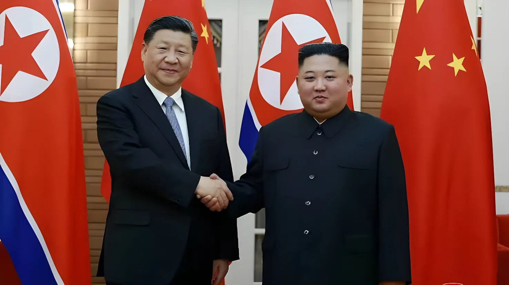

Les 8 et 9 juin 2026, Xi Jinping s'est rendu en Corée du Nord pour la première fois depuis 2019, accueilli en grande pompe par Kim Jong-un. Premier déplacement à l'étranger du président chinois cette année, ce voyage intervient alors que Pyongyang s'est rapproché de la Russie de Vladimir Poutine depuis 2022 et revendique un arsenal nucléaire toujours plus affirmé. Sous les discours d'amitié « forgée dans le sang », la visite a surtout révélé un silence : celui, désormais assourdissant, de Pékin sur la dénucléarisation de son voisin.
Lundi 8 juin, le président chinois Xi Jinping atterrit à l'aéroport international de Sunan, à Pyongyang, pour une visite d'État de deux jours. Lui et son épouse Peng Liyuan sont accueillis sur le tarmac par Kim Jong-un et la première dame Ri Sol-ju, avant une cérémonie fastueuse place Kim Il-sung : garde d'honneur, défilé, enfants brandissant les drapeaux des deux pays, et des dizaines de milliers de Nord-Coréens mobilisés le long du cortège. La diffusion de la visite jusque sur les écrans géants des centres commerciaux pyongyangais illustre l'ampleur de la mise en scène voulue par le régime.
Il s'agit de la première visite d'un chef d'État chinois en Corée du Nord depuis celle de 2019, et du premier déplacement de Xi Jinping à l'étranger en 2026 — un choix hautement symbolique, alors que les présidents américain Donald Trump et russe Vladimir Poutine s'étaient eux-mêmes succédé à Pékin au cours des semaines précédentes. Le soir, Kim Jong-un offre un banquet à son hôte et à sa délégation, qui comprend, fait notable selon l'agence nord-coréenne KCNA, les ministres des Affaires étrangères et les responsables de la Défense des deux pays — une présence inédite par rapport au précédent sommet de 2019.
Au-delà des discours protocolaires, c'est l'absence d'un sujet qui retient l'attention des observateurs : la dénucléarisation de la Corée du Nord, pourtant ligne rouge historique de Pékin, n'a fait l'objet d'aucune mention publique. Selon Rachel Minyoung Lee, du Stimson Center, citée par le Japan Times, ce silence renforce l'idée que la Chine ne considère plus la dénucléarisation comme une option viable et privilégie désormais d'autres priorités sécuritaires nécessitant l'adhésion de Pyongyang. Un indice notable : lors du banquet du 8 juin, l'agence Xinhua a rapporté que Xi Jinping avait dit souhaiter que « le peuple coréen atteigne les objectifs fixés » lors du congrès du parti nord-coréen de février — congrès où Kim Jong-un avait justement annoncé vouloir renforcer la force nucléaire de l'État.
Pour Chad O'Carroll, directeur du site spécialisé NK Pro, les deux pays ont mis fin à une période de tension en mettant de côté la dénucléarisation, la Corée du Nord se voyant ainsi reconnue de facto comme puissance nucléaire. Une rupture par rapport à la position chinoise traditionnelle, qui avait conduit Pékin à voter des sanctions onusiennes contraignantes contre son allié en 2016 et 2017. Depuis l'été 2023 toutefois, la Chine s'était déjà soigneusement abstenue d'évoquer publiquement la question.
Kim Jong-un visite une usine de munitions et ordonne de multiplier par 2,5 la capacité de production de missiles du pays en cinq ans, à la veille de l'arrivée de Xi Jinping.
Kim Yo-jong, sœur du dirigeant nord-coréen, réaffirme que le statut nucléaire de la RPDC est une « ligne irréversible », à la veille de la visite chinoise.
Arrivée de Xi Jinping à Pyongyang. Cérémonie d'accueil place Kim Il-sung, sommet officiel et banquet offert par Kim Jong-un.
Fin de la visite d'État. Les agences officielles des deux pays diffusent des comptes rendus évoquant un « consensus satisfaisant » sur les questions internationales et régionales.
Les analyses spécialisées (Asialyst, NK Pro, Japan Times) pointent l'absence de toute référence publique à la dénucléarisation, lue comme un tournant tacite de Pékin.
Lors du sommet, Xi Jinping a assuré que l'attachement du Parti communiste chinois à « l'amitié traditionnelle » entre les deux pays, ainsi que le soutien à Kim Jong-un et à la « cause socialiste » de la RPDC, demeurait inchangé, quelles que soient les évolutions de la situation internationale. Il a appelé à un renforcement des échanges diplomatiques, militaires et économiques, et à voir la relation bilatérale s'élever vers « de nouveaux sommets ». Kim Jong-un a de son côté salué le choix de la Corée du Nord comme première destination étrangère de Xi Jinping en 2026, y voyant un signe de « l'importance » accordée par Pékin à l'amitié sino-nord-coréenne.
Selon le Comité national sur la Corée du Nord, think tank basé à Washington, Pyongyang dépendait dès 2022 de la Chine pour près de 95 % de son commerce total et 85 % de ses exportations. Cette dépendance structurelle reste, pour Pékin, le principal levier d'influence sur son voisin — un levier que la Chine entend réaffirmer face à la percée diplomatique et militaire russe en Corée du Nord depuis 2022.
« La position ferme du Parti communiste chinois et du gouvernement, qui attachent une grande importance à l'amitié traditionnelle entre la Chine et la RPDC, demeure inchangée. »
— Xi Jinping, président chinois, à Kim Jong-un, 8 juin 2026 (agence Xinhua)Ce déplacement intervient alors que Pyongyang a considérablement renforcé ses liens avec Moscou depuis le début de l'invasion de l'Ukraine en 2022, et plus encore depuis le traité de défense mutuelle signé entre Vladimir Poutine et Kim Jong-un en juin 2024. Des troupes nord-coréennes ont depuis combattu aux côtés de l'armée russe : selon des renseignements ukrainiens cités en avril 2026, plus de 14 000 soldats nord-coréens auraient été déployés en Russie, et plus de 2 250 d'entre eux y seraient morts. Cette assistance militaire a permis à Pyongyang d'obtenir en retour des technologies et un appui économique substantiel, contribuant à relancer une économie nord-coréenne longtemps exsangue.
Pour plusieurs analystes, dont le chercheur Kang Jun-young de l'Université Hankuk à Séoul, la Chine chercherait avant tout à reprendre l'initiative diplomatique face aux États-Unis et à la Russie, tout en se prémunissant contre un basculement complet de Pyongyang dans l'orbite de Moscou. Andrei Lankov, professeur à l'Université Kookmin, résume la ligne chinoise : maintenir l'économie nord-coréenne fonctionnelle et préserver un État-tampon face à la Corée du Sud, où sont stationnés environ 30 000 soldats américains — quitte à tolérer, de fait, l'arsenal nucléaire du voisin.
| Acteur | Position / enjeu | Élément clé |
|---|---|---|
| Chine | Réaffirmer son influence sur Pyongyang | 1ère visite d'État depuis 2019 |
| Corée du Nord | Faire reconnaître son statut nucléaire | ~60 ogives estimées (SIPRI) |
| Russie | Alliance militaire renforcée depuis 2024 | +14 000 soldats nord-coréens déployés |
| Corée du Sud / Japon | Inquiétude face au rapprochement | Vigilance renforcée à Séoul et Tokyo |
| États-Unis | Hypothèse d'une reprise du dialogue | Trump déjà rencontré Kim 3 fois |
Contrairement à 2019, c'est un Kim Jong-un en position de force qui a reçu Xi Jinping : arsenal nucléaire élargi, alliance militaire renforcée avec Moscou, économie en reprise grâce aux dividendes de la guerre en Ukraine. Pékin, qui redoutait autrefois les effets déstabilisateurs du programme nucléaire nord-coréen, semble aujourd'hui privilégier la stabilité de son État-tampon et la compétition stratégique avec Washington plutôt que d'insister sur une dénucléarisation devenue, de fait, hors de portée. Pour Séoul et Tokyo, cette normalisation tacite du statut nucléaire nord-coréen, validée en creux par le silence chinois, dessine une péninsule coréenne où les rapports de force se rééquilibrent durablement en faveur de Pyongyang.